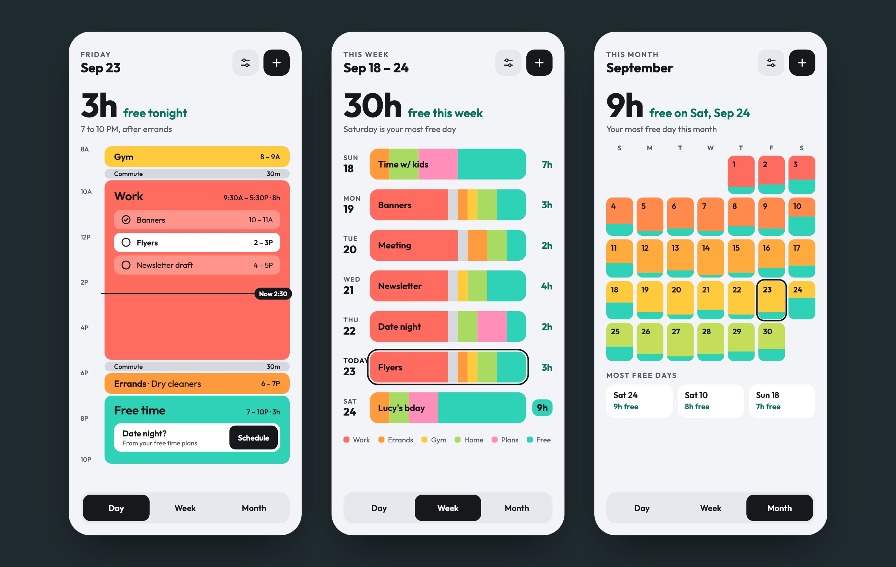
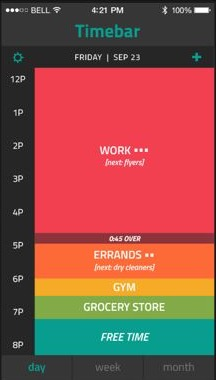
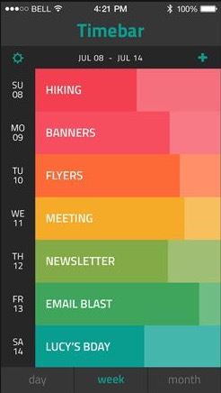
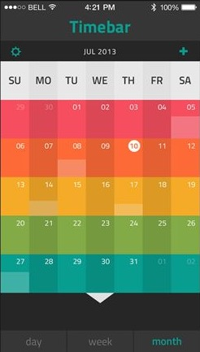
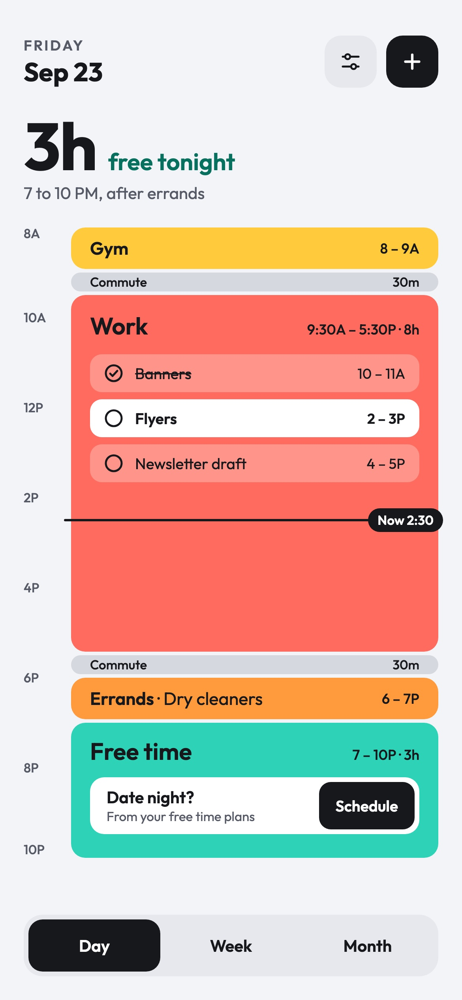
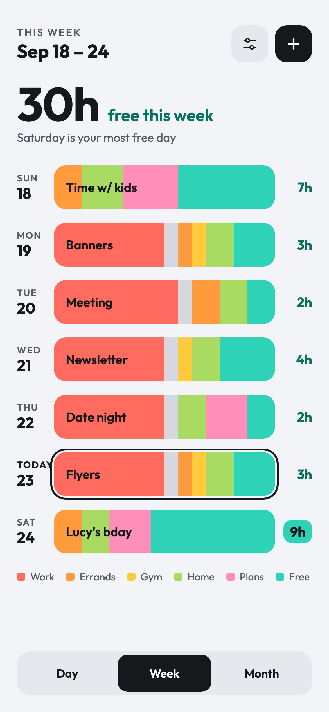
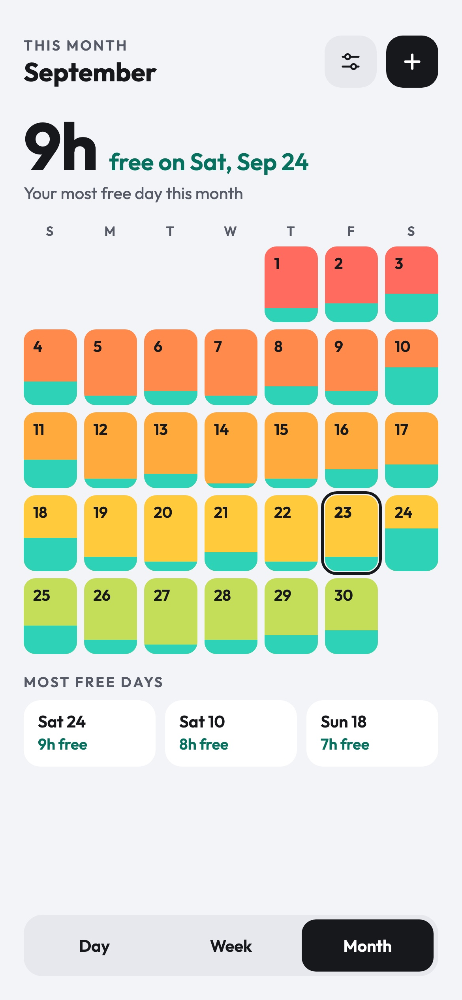

I designed Timebar for a class project in 2013 because it was an app I genuinely wanted for myself. Most calendars show you everything you have to do. I wanted one that shows how much free time you have left, and which days you’re most free, so planning something fun doesn’t take digging. I’m now revisiting it with AI to close the gaps the original never answered and turn it into a working app people can try.

The 2013 version showed your day as stacked blocks of time instead of a task list, with each block sized by how long it takes. Teal always meant free time. Week and month views let you compare days, and a Free Time Plans list held the things you were looking forward to, like a trip or a date night. An alarm would tell you when work ran over and started cutting into your free time.
I wanted it to be colorful and fun, so the calendar wouldn’t feel daunting.



Looking at it again 13 years later, the idea held up but a lot of it was never fully thought through. Before building anything, I worked through each gap and made a call.
I also cut the Facebook, Twitter and LinkedIn integrations. They didn’t help anyone find free time.
I kept what worked in the original, the red to teal palette with teal for free time, blocks sized by how long they take, and the Day, Week and Month switcher. Every screen now leads with the answer to “when am I free?” in large type, before any calendar detail. I swapped the dark chrome for a light background and dropped the grid lines so the colors carry the personality. The schedule shown is made up, and the working app will keep each person’s data on their own device.



This project is still in progress. Here’s the plan from here.
A version anyone can open from a link, with a sample week to explore and blocks they can add themselves.
Bring in a calendar file from Google or Apple so I can actually use it day to day.
Live calendar sync, real notifications and location for the overtime alarm, reusing the design and logic from the web version.